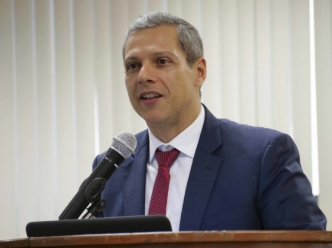

| Hora | Atividade |
|---|---|
| 08h30 - 10h00 | Mesa Redonda 1: Inteligência artificial no Poder JudiciárioModerador: Marcos A. Simplicio Jr(Universidade de São Paulo) Palestrante: Caio Moysés de Lima (JFSP) Mini bio: Juiz Federal desde 2002. Mestre em Ética e Filosofia Política pela USP. Bacharel em Direito e Filosofia. Ex-coordenador da Inovação na Justiça Federal de São Paulo. Diretor Acadêmico da Escola de Servidores da Justiça Federal de São Paulo. Título: Inovação no Poder Judiciário: o uso da Inteligência Artificial Palestrante: Claudia de Oliveira Lozada (Instituto de Matemática/UFAL) Mini bio: Advogada, Doutora em Educação (USP), Pesquisadora e Docente na Universidade Federal de Alagoas (Instituto de Matemática/UFAL) e do Programa de Pós-Graduação em Ensino de Ciências e Matemática (PPGECIM) na UFAL. Coordenadora do Grupo de Pesquisa Matemática, Educação e Tecnologia (MATEDTEC), suas linhas de pesquisa incluem saberes e práticas docentes, e tecnologias digitais de informação e comunicação. Título: A validação ético-jurídica dos modelos de Inteligência Artificial e a cibersegurança no Poder Judiciário Palestrante: Eduardo Carvalho (Equinix do Brasil) Mini bio: Graduado em Administração de Empresas pela Pontifícia Universidade Católica de Campinas. Ingressou na Alog em 2005 como diretor de vendas e tornou-se vice-presidente em 2012. Desde 2013, é gerente diretor da Equinix no Brasil e responsável por toda a operação no país e corresponsável pela operação da América Latina. Título: Inovação no Poder Judiciário: o uso da Inteligência Artificial |
| 10h15 - 12h15 | Mesa Redonda 2: Perícia Computacional e o Direito Penal na InformáticaModerador: Marcos A. Simplicio Jr,(Universidade de São Paulo) Palestrante: Leonardo Vieira Wandelli (Tribunal Regional do Trabalho/PR) Mini bio: Doutor e mestre em Direito pela UFPR, DEA en Derechos Humanos y Desarrollo pela Universidad Pablo de Olavide de Sevilla, Consultant Contractor do OHCHR Office of the High Commissioner for Human Rights – UN (2015/2016), Juiz do Trabalho Titular e membro da Comissão Permanente de Saúde e do Conselho Executivo da Escola Judicial - Tribunal Regional do Trabalho 9ª Região (PR). Membro do Comitê Gestor Nacional do Programa Trabalho Seguro CSJT/TST. Título: Perícia Computacional no Código Fonte do Aplicativo de Plataforma de Trabalho  Palestrante: Gregore Moreira de Moura (Procurador Federal - AGU) Mini bio: Bacharel em Direito pela Universidade Federal de Juiz de Fora (2001), Mestre em Ciências Penais (2006) e Doutor em Direito Constitucional na Universidade Federal de Minas Gerais (2017). Professor de Direito Informático na PUC-MG. Ex- Diretor Nacional da Escola da Advocacia Geral da União (2016/2017). Atualmente é Procurador Federal e Conselheiro Seccional da OAB-MG. Título: Direito Penal Informático, a cibersegurança e os crimes cibernéticos. |
| 13h30 - 15h00 | Palestra Técnica: Forense computacional “mão na massa”Moderador: Marcos A. Simplicio Jr, Universidade de São Paulo Palestrante: Rafael Velasquez (TechBiz) Mini bio: Graduado em Ciência da Computação pela FUMEC (2004), Mestre MBA em Gestão de Vendas na FGV (2021). É atualmente Diretor de Vendas da empresa TechBiz, atuante em investigações e perícia forense digital, representa a empresa israelense, a Celebritte. A TechBiz possui um conceito de inteligência digital que amplia o conceito de investigação para celulares, fontes abertas e todos os meios de comunicação digital possível. Título: Extração e Análise Forense de Dispositivos Celulares |
| 15h30 - 17h00 | Mesa Redonda 3: Computação forense & cibersegurança: os desafios na academia, na indústria e na sociedadeModerador: Marcos A. Simplicio Jr,(Universidade de São Paulo)Palestrante Andre Grégio (UFPR) Mini bio: André Grégio é Professor no Departamento de Informática da Universidade Federal do Paraná. Doutor em Engenharia Elétrica/Computação pela Unicamp. Suas áreas de interesse em pesquisa incluem análise e detecção de ataques e códigos maliciosos, aplicações de ciência de dados em segurança e defesa de dispositivos móveis. Título: Desafios de pesquisa em forense computacional Palestrante Emerson Wendt (Delegado de Polícia - RS) Mini bio: Delegado de polícia civil do RS. Ex-Chefe de Polícia do RS e ex-Presidente do Conselho Nacional de Chefes de Polícia. Mestre e Doutorando em Direito pela Universidade La Salle - Canoas/RS. Título: Os algoritmos e os desafios de pesquisa: o quanto precisamos nos dedicar em produzir conhecimentos sobre a segurança da informação, o cibercrime e a forense computacional? |